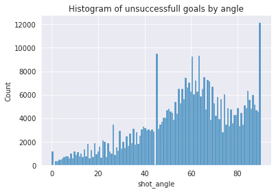

On remarque facilement que les tirs réussits sont majoritairement proches, soit dans la zone des 10-20 mètres. Plus la distance augmente, plus les tirs réussis sont rares. Pour ce qui est des tirs manqués, la distribution semble assez uniforme. Par contre on a un pic proche du but puisque nous savons que plusieurs buts sont marqués de près, donc il vaut la pein d’en essayer plus. finalement, la ligne du offside fait en sorte que peu de buts sont tentés au-delà de 70m.
Nombre de tirs vs. angle
Tir Réussits
Tirs Manqués

Nous avons choisis de traiter l’angle comme un angle par rapport à la droite qui passe d’un bout à l’autre du but. Quelqu’un en face dut but a donc un angle de 90 degrés. Il est donc normal de trouver peu de buts avec un angle de 0 selon notre intuition. Il est intéressant de voir que les distributions de but réussits et manqués sont presques identiques hormis un pic de tirs manqués vers les 60 degrés. On peut aussi voir que l’anfgle avec le plut haut taux de succès est d’être directement en face du gardien.
Histogramme 2D entre la distance et l’angle
Il est intéressant de constater que la majorité des tirs sont effectués à une distance de 20m du gardien et devant celui-ci. On remarque aussi que plus la distance au but est petite, plus l’angle se doit d’être en face du gardien, sinon on risque de frapper un poteau car le gardien peut bloquer l’entièretée du but.
Taux de but à la distance/angle
Angle
Distance
On peut voir que le taux de succès est beaucoup plus grand lorsque l’on s’approche du but. On apercoit aussi une anomalie dans les données du a un outlier qui fait en sorte qu’on obtiens 80% de succès à moins d’un mètre du but.
Pour ce qui est de l’angle, on voit une tendance qui indique que plus l’angle est proche d’être en face du gardien, plus le taux de succès est grand. C’est logique puisque quand on tir de coté, le gardien recouvre la majoritée du but.
But par distance par rapport de fillet vide ou non vide
But Vides
Buts Avec Gardien
La distribution des buts vides est presque uniforme quoiqu’un peu plus difficle lorsque l’on tire de loin. Les buts avec gardiens quant à eux sont beaucoup plus faciles à réaliser de près.
Notre prétraitement enlève les anomalies dans les données (tirs de la mauvaise zone). Nous ne trouvons donc aucune anomalie dans notre graphe dû à notre connaissance du domaine injectée dans notre pré-traitement.
Le graphique montre la densité de tirs sur la glace pour une équipe/saison donnée. La moyenne (blanche) est la moyenne de tirs de toutes les équipes pour une saison donnée. On peut voir les régions chaudes (en rouge) qui représentent des régions ou plus de but ont été marqués que la moyenne des équipe. En bleu on a l’opposé, soit en-dessous de la moyenne.
Dans ces graphes, on peut voir de quel régions les différentes équipes arrivent à marquer leurs buts. Est-ce qu’il s’agit d’une équipe qui amrque beaucoup de buts à proximitée de manière aggresive, qui domine le centre de la glace, ou est-ce plutôt une équipe qui préfère tirer souvent, mais de loin avec des coups du poignet.
Ceci nous permet de voir l’efficacité des startégies et les différentes faiblesses des équipes.
Select Season
Fixed to 2016-2018 for hand-in due to filesize exceeding gradescope limits otherwise
Select Team
Avalanche Colorado : une stratégie gagnante
Season 2016-2017
season 2020-2021
Les avalanches se situaient en dernière place de leur division en 2016-2017 et on fait une remontée fulgurante en 2020-2021 pour se hisser au top de leur classement. On peut voir qu’ils avaient de la difficulté auparavant à s’approcher du gardien et que la majoritée de leurs buts étaient marqués de loin.
Leur stratégie dans la dernière saison a beaucoup évoluée et ils sont désormais capables de s’approcher du but ce qui leur donne davantage d’occasions de marquer.
Buffalo Sabres vs. Tampa Lighting
Year
Buffalo Sabres
Tampa Lighting
2018-2019
2019-2020
2020-2021
La comparaison côte-à-côte montre que le Lightning, qui connait beaucoup de succès, priorise des tris proche du centre de la glace et proche du gardien. Ils réussissent donc à déjouer la défence et s’approcher du but, ce qui leur donne un beaucoup plus haut taux de succès.
Buffalo quand a eux on des tirs beaucoup plus disparates avec un faible taux de succès. Leurs régions à haute densitée de succès sont beaucoup plus disparates.
Il semble facile d’expliquer la différence de perforamnce selon ces graphiques!
Dans le respect des consignes, qui exigeaient de superposer le nombre de tirs et le nombre de buts de chaque type, nous avons réalisé un diagramme à barres empilées où chaque barre représente un type de tir. Cependant, puique plusieurs questions ont été posé en même temps, il est évident qu’un graphique par question serait idéal.
On constate que le wrist shot est le type le plus courant, suivi loin derrière par les slap shots et les snap shots. Le diagramme montre que wrist shots et les snap shots sont particulièrement redoutables en termes absolut. Par contre les données démontrent que ce ne sont pas les types de tir qui se traduisent par le plus haut taux de succès.
Une visualisation combinant, par exemple, une barre représentant le nombre de tirs de chaque type accompagné d’une ligne représentant la proportion de ces tirs résultant en un but aurait été plus parlante, et aurait par exemple révélé que les types de tir les plus redoutables sont deflected et tip-in.
Distance de tir
Pour cette question, nous avons choisi de présenter des histogrammes, où chaque barre représente une classe de distances et indique la proportion de tirs se traduisant en buts. Initialement, nous avions laissé à la bibliothèque pandas le soin de délimiter les classes, mais le résultat nuisait à la lisibilité. Si nous avions utilisé des quartiles, nous aurions perdu certaines nuances intéressantes dans les données. Les déciles auraient donné des bornes moins interprétables pour les classes. Au final, nous avons opté pour des classes représentant chacune un intervalle de dix pieds de distance.
On voit dans l’ensemble que, jusqu’à une distance de 70 pieds, plus un tir est effectué proche de la cible, plus il a de chances de se traduire en but. Ce n’est pas un constat très surprenant, car on peut penser qu’il est plus facile de viser avec précision d’une distance moins grande, et que de plus moins de joueurs ont l’opportunité de s’interposer entre le tireur et le gardien pour tenter d’intercepter la rondelle.
En regardant les graphiques, on constate cependant deux phénomènes étonnants.
D’une part, au-delà de 70 pieds, les tirs semblent reprendre en efficacité. En effet, de 2018 à 2022, les tirs d’entre 90 et 100 pieds sont en fait plus efficaces que les tirs d’entre 40 et 50 pieds. En 2020-2021, ce sont plutôt les tirs d’entre 80 et 90 pieds qui présentent cette caractéristique. Dans toutes ces années, les tirs de plus de 70 pieds de distance sont plus efficaces en moyenne que ceux de 60 à 70 pieds. La présente visualisation ne permet par contre par de tenir compte de différents facteurs qui pourraient expliquer cela. Par exemple, est-il possible que les attaquants aient une propension plus grande à tirer de loin dans un filet désert, ou encore quand, suite à une échappée, ils ne font pas face à des défenseurs qui pourraient s’interposer? Ces deux facteurs et d’autres sans doute permettraient d’expliquer au moins en partie pourquoi les tirs de loin semblent plus efficaces que ceux de distance moyenne.
D’autre part, on remarque une différence assez importante au niveau du taux de succès des tirs les plus proches entre la saison 2018-2019 et les saisons subséquentes. Sur la base des donnés à notre disposition, nous ne nous considérons pas en mesure de faire d’hypothèses sur la raison qui explique cette différence.
Types et distance de tir
Nous avons utilisé deux types de visualisation pour cette question. Le diagramme en aires est plus facile à lire de façon générale, mais certains insights n’en ressortent pas aussi bien. Un diagramme tridimensionnel présentant la distance et le type de tir sur chacun des deux axes horizontaux et la proportion de succès sur l’axe vertical est plus difficile à lire, mais fait ressortir certains points intéressants.
Encore une fois, afin de répondre aux exigences de l’énoncé, nous avons représenté la proportion de tirs ayant donné lieu à des buts, mais ici une représentation du nombre de tirs et de buts aurait été utile. Par exemple, les deux représentations donnent à penser que le tir de type wrap around est extrêmement redoutable à grande distance. Ceci est une anomalie dans les données car il n’existe qu’un seul point de ce type. D’autant qu’un tir wrap around à longue distance ne semble pas vraiment avoir de sens.
Cela dit, on constate que le type de tir le plus efficace dépend grandement de la distance. À courte distance, les tirs les plus efficaces identifiés plus haut sont redoutables, par exemple deflected et tip in. Par contre, à plus longue distance, des types de tir qui ne ressortaient pas vraiment initialement semblent les plus efficaces, en particulier le wrist shot et le backhand.
Chaque match commence avec le même nombre de joueurs et les joueurs sont enlevés du terrain suite à des pénalités. Il serait donc envisageable de calculer, à l’aide des timestamps et des événements définissants les différents penalités, combien de joueurs il y a sur le terrain pour chaque évenement. Les évenements de types “Penalty” stockent les durées des pénalties (“penaltyMinutes”) permettant de détérminer quand les forces se rééquilibrent.
Fonctionnalitées Supplémentaires
En plus des events qui ont été sélectionnés il serait interessant de considérer les ‘Missed Shots’ et ‘Blocked Shots’ pour analyser si elles sont ratées parce qu’elles sont prises à une certaine distance. On pourrait aussi envisager qu’il y ait une correlation entre le nombre de penalties d’une équipe et le nombre de shots pris. Finalement, nous avons choisis de tirer les données sur les joueurs qui ont participé aux tirs afin de déterminer et inclur le taux de reussite.
Nous avons ici un déboggueur qui charge les fichiers .JSON bruts et qui affiche les jeux. Le code permet de charger de manière dynamique les .JSON.
La classe Data permet de storer des données entre les appels de la fonction et simplifie les opérations.
class Data:
"""
Stateful class to store data and print information
"""
year: int = None
game_id: int = None
play_id: int = None
_data: dict = None
def set(self, year, game_id, play_id):
# only load large json data (>100MB) of needed
if year != self.year:
with open(f'../data/raw/{year}.json', 'r') as f:
self._data = json.load(f)
self.year = year
self.game_id = game_id
self.play_id = play_id
def display(self):
display(
self._data[self.game_id]['liveData']['plays']['allPlays'][self.play_id]
)
def update_plot(self, fig: plt.figure, circle: plt.Circle):
coords = self._data[self.game_id]['liveData']['plays']['allPlays'][self.play_id]['coordinates']
if coords:
circle.set(visible=True, center=(coords['x'], coords['y']))
else:
circle.set(visible=False)
fig.canvas.draw()
display.display(plt.gcf())
La boucle principale plot permet de faire les bons appels selon ce qui est à démontrer